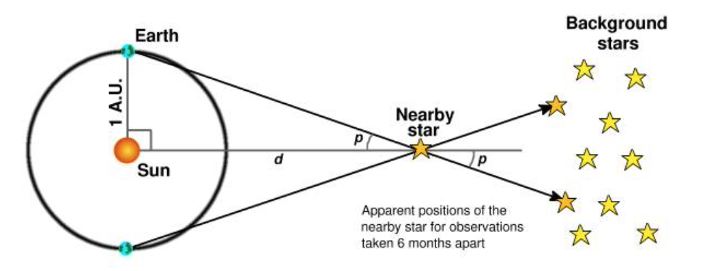

Ricordo una mia lettura di qualche anno fa che fu per me quasi una rivelazione: si parlava di distanze cosmiche e degli attuali progressi riguardo alla nostra conoscenza dell’universo e dei suoi limiti.
Questo perché ovviamente l’argomento è uno dei quesiti più comuni, sia nelle religioni, sia tra gli uomini di scienza: lo spazio è infinito oppure ha dei confini? E, se ci sono, cosa c’è oltre? Il problema di quest’epoca però è riuscire ad arrivare così lontano con lo sguardo, considerando che, a differenza degli esploratori medievali che potevano partire con le caravelle verso l’orizzonte, noi sappiamo perfettamente che ipotetici viaggi di una simile entità risultano impossibili, proprio per le leggi fisiche ad oggi conosciute. Quindi ci si può limitare ad osservare, con potenti strumenti puntati verso il nostro orizzonte celeste, con tutti i limiti che ne derivano. Rispetto ai cannocchiali di Galileo ovviamente il progresso ha fatto passi da gigante, ed ora siamo in grado di studiare corpi celesti distanti migliaia di anni luce da noi. Riusciamo persino a vedere pianeti che non emettono luce propria, grazie a tecniche (e alla grande pazienza degli astronomi) che consistono nell’aspettare che il pianeta si frapponga tra noi e il sole attorno al quale lui orbita. Sembrerebbe abbattuto ogni confine e ogni mistero, ma la situazione è molto meno certa di quanto sembri.

Ricordo un dato che mi colpì: spesso l’incertezza sulla misura di una distanza tra noi e un altro corpo celeste supera addirittura il valore stimato. Che è come se, misurando un mobile di casa, dicessi che mi sembra largo 1,5 metri, ma non ne sono sicuro perché potrebbe andare dai 5 cm ai 4 metri di larghezza. Insomma, qualsiasi dato sull’universo lontano va preso davvero con le pinze, e questo purtroppo non dipende dagli scienziati o dall’attrezzatura dietro a tali misure e calcoli; parliamo proprio di errori di fondo, attualmente insuperabili. Ovviamente tutti gli strumenti impiegati oggi sono elettronici, e quindi molto più precisi di quelli utilizzati nei secoli precedenti.
Restano comunque due grandi ostacoli: prima di tutto il metodo con cui si stimano le distanze, che lo schema a lato riesce a descrivere molto meglio di qualsiasi parola. Non potendoci avvicinare agli oggetti da misurare possiamo soltanto guardarli dagli unici due punti di vista possibili, cioè dalla terra che, a distanza di 6 mesi, si trova nei due estremi della sua orbita attorno al sole. Si costruisce così un triangolo, di cui conosciamo alcuni lati e angoli e dai quali ricaviamo ciò che ci serve. Risulta evidente che ogni misura celeste si basa su altre misure, ed è abbastanza logico che più passaggi si fanno e più gli errori si trascinano e si moltiplicano tra loro: piccole incertezze sulle misure iniziali provocano enormi errori sui risultati.
Il secondo grande ostacolo è che anche l’elettronica non è infallibile, anzi: tra le unità fondamentali del Sistema Internazionale il metro e il secondo sono tra le più precise, mentre l’Ampere è al penultimo posto, tra quelle realizzate con la minore accuratezza. Il che è un problema perché puoi avere il metro più bello del mondo, quasi perfetto, ma se continuerai a misurarlo con strumenti elettronici la scarsa affidabilità degli Ampere rovinerà sempre tutto.
Si faranno altri passi avanti, ma per ora rimaniamo tutti un po’ impantanati in questo paradosso di aver basato tutta la nostra epoca su una delle cose su cui siamo più imprecisi, che ci permette di realizzare computer e strumenti digitali molto migliori dei precedenti, ma contemporaneamente ci incatena e non permette ulteriori balzi in avanti.
Un domani, chissà…